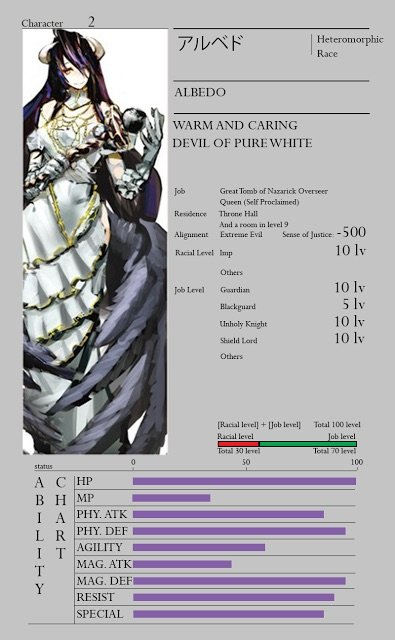

More about Albedo |
Abilities and Powers

Albedo boasts the highest defensive power among all the NPCs of Nazarick. Especially, when she is fully equipped with her personal armor, Hermes Trismegistus, Albedo's defense is virtually impregnable.
She is also immune to a variety of diseases.
Albedo possesses a special skill which allows her to transfer any damages she suffers to her armor instead. With this skill, she can even withstand a Super-Tier Magic spell and remain unscathed.
However, Albedo's special skill has limits as she can use only it 3 times a day. Moreover, the piece of armor that absorbs the damage will break apart regardless of its defense capabilities.
Once the limit is reached, Albedo will lose all outermost part of the armor and her defense and combat potential will fall drastically.
Though she still can compensate this by changing to her true form and assimilating the remaining armor parts to harden her own flesh.
As a warrior, Albedo also has high-level physical abilities.
During her outburst of anger from jealousy towards Shalltear, Albedo easily destroyed parts of the fortress built by Aura which also shook an entire fortress in the process.
A simple punch from Albedo can send Azuth Aindra, who was in his Armor of Reinforcement, flying to a considerable distance. According to her, it felt like she punched a tofu.
In the incident where she tried to rape Ainz. it took a combined effort of Mare and several Eight-Edge Assassins to restrain Albedo.
Skills
|